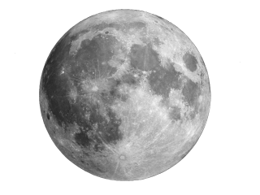

The Moon is Earth’s only natural satellite and the fifth-largest in the Solar System, with a diameter of 3,474 km and an average distance of 384,400 km from Earth. Its surface is rocky and cratered, with no atmosphere. The Moon’s gravity affects Earth’s tides and helps stabilize its axial tilt. It goes through phases—new moon, crescent, half-moon, and full moon—during its 29.5-day orbit. The Moon has been a key target for exploration, with NASA's Apollo missions landing astronauts on its surface in 1969.
Want to learn about the Earth?